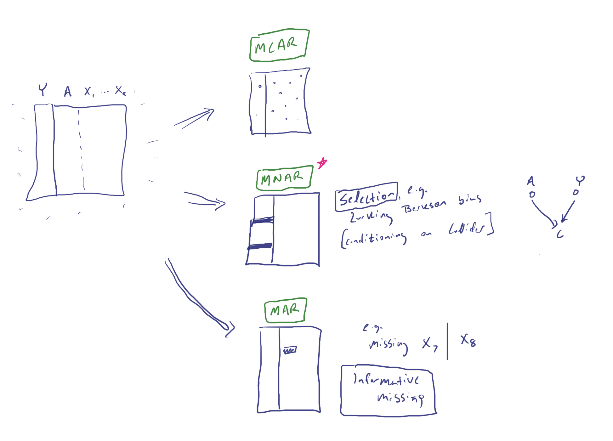
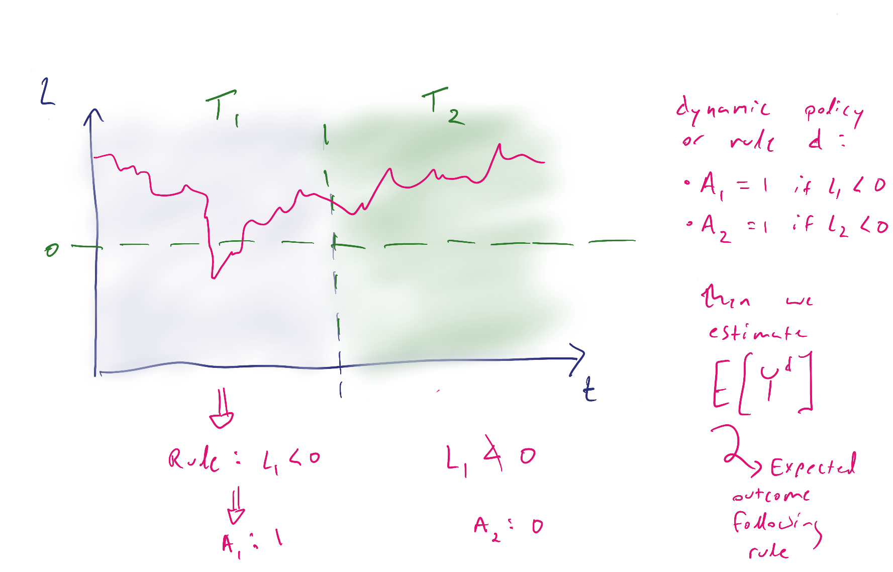
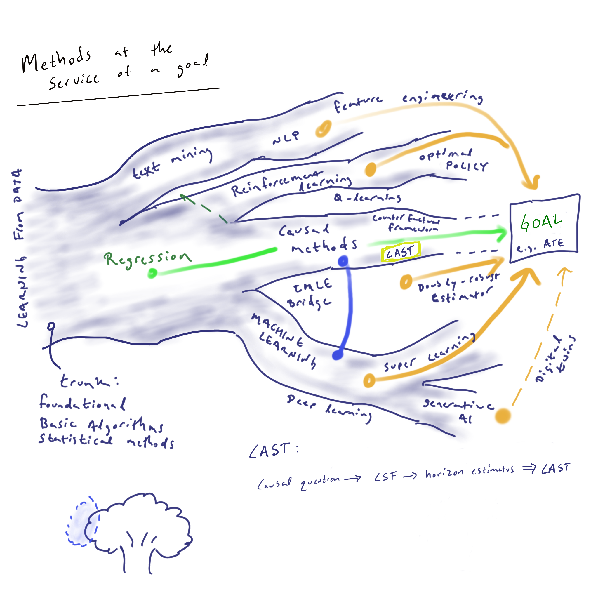
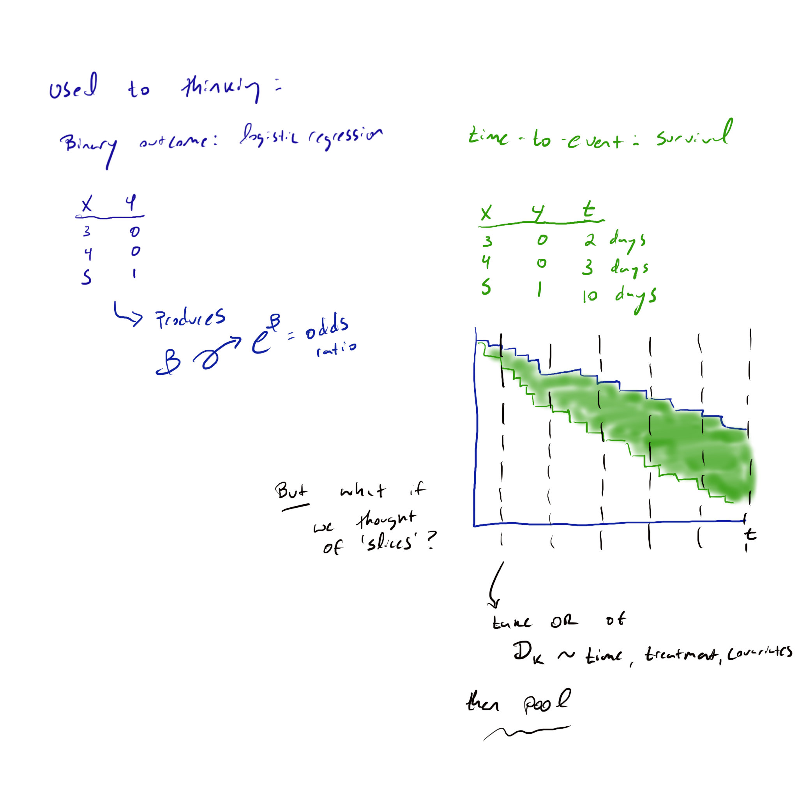
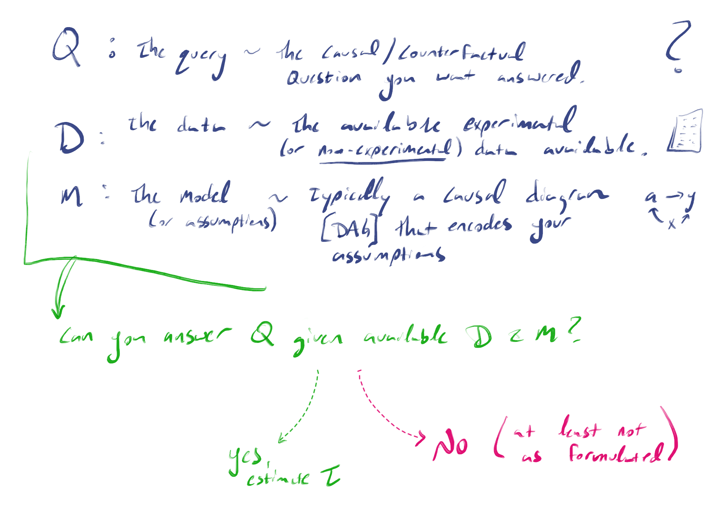

The central problem of causal inference...
One person.
Two possible paths.
Hector receives treatment. His symptoms improve. What would have happened to him without it?
Take a snapshotHow would you describe yourself?
Choose a starting point. The whole story is yours to explore.
Start with the counterfactual.
Begin with the missing path. Try two possible worlds, then watch an average effect change through time.
Connect the question to the method.
Start with the target and assumptions, place CAST among related approaches, then examine the estimates.
Connect causal inference with familiar statistics.
Revisit what “missing” means, ask what makes a comparison causal, then bring time into the question.
Prepare a lesson.
Start with the editable teaching kit, then choose an animation and a thought experiment for your group.
01 / Start with the question
Pause both paths at the same time.
Hector’s treatment effect would compare his two possible outcomes at the same time. Only the path he takes can be observed. His improvement since treatment began cannot tell us what would have happened without it.
Across people, we can ask about an average effect, even though each person’s alternative remains unobserved. Hector’s sketch shows symptoms. Our worked example turns to survival: how does treatment change the probability of being alive at a chosen time?
under treatment−Survival probability
under control
A difference of +10 percentage points means survival is 10 points more likely under treatment at that time. It does not tell us which people benefited.
A different kind of missing How this connects to MCAR, MAR and MNAR
A missing lab result is a value we might have recorded along the observed path. Hector’s outcome under the other treatment belongs to a path he did not take. Even a perfectly complete record leaves that alternative unobserved.
Causal inference can itself be formulated as a missing-data problem: treatment assignment determines which potential outcome we observe. Assumptions can let us identify an average contrast without recovering everyone’s missing outcome.

- MCAR
- Missingness does not depend on the data values.
- MAR
- Given observed values, missingness does not further depend on the missing values.
- MNAR
- That MAR condition fails; missingness still depends on unobserved values.
Read the sketch’s collider example separately: selection bias and MNAR are not synonyms. MAR can be informative about observed variables; it does not mean “nothing predicts missingness.”
Nabi and colleagues: causal and counterfactual views of missing data ↗
Thought experiment One average, different individual effects
These ten invented records illustrate the missing counterfactual at one fixed horizon, with no censoring. This thought experiment uses its own teaching data. Start with the observed records, then compare two possible completions of what is missing.
Bold teal outcomes are observed. Question marks are missing. Dotted, italic outcomes are hypothetical completions.
We observe 3 of 5 treated people alive and 2 of 5 control people alive. That observed contrast alone does not identify the causal effect. Ten alternative outcomes remain missing.
2 helped · 0 harmed · 8 unchanged.
If all ten received treatment, 6 would survive; under control, 4 would survive. The sample average effect is (6 − 4) / 10 = +20 percentage points.
4 helped · 2 harmed · 4 unchanged.
Again, 6 would survive under treatment and 4 under control: +20 percentage points. The same average hides a different set of individual effects.
| Person | Received | If treated | If control |
|---|---|---|---|
| 01 | Treatment | Alive | ? |
| 02 | Treatment | Alive | ? |
| 03 | Treatment | Alive | ? |
| 04 | Treatment | Died | ? |
| 05 | Treatment | Died | ? |
| 06 | Control | ? | Alive |
| 07 | Control | ? | Alive |
| 08 | Control | ? | Died |
| 09 | Control | ? | Died |
| 10 | Control | ? | Died |
Here “helped” means alive under treatment and dead under control at this horizon; “harmed” means the reverse. Neither completion is an estimate or a recovered truth. Other completions could also change the average. Even knowing both marginal survival probabilities would not reveal how the two outcomes pair within people.
02 / Bring in time
What changes over time?
Longitudinal analysis follows people through time. It can describe changing outcomes; causal longitudinal analysis asks how those outcomes would change under different treatment choices or histories.
We might compare one decision at the start and follow its effects over time, or study decisions that change during follow-up in response to a person’s history.
Follow a baseline treatment decision.
Compare survival under treatment and control at several times after the baseline decision.
This demo asks how survival benefit changes after a baseline treatment decision.
Adapt treatment as new information arrives.
A treatment rule can respond to changing health measurements at each visit. Earlier treatment can affect those measurements and subsequent decisions.

Here the target is an outcome under a treatment history or policy. LTMLE is one approach to estimating such targets.
At decision 2, read the characteristic as L₂. This threshold sketch illustrates a dynamic rule; a modified treatment policy can additionally depend on the treatment value that would naturally occur.
Choosing an approach depends on the intervention, outcome and treatment history being studied.
Related approaches Where TMLE, LTMLE, LMTP and CAST meet
These approaches contribute different parts of a causal analysis, from defining an intervention to estimating and summarizing its effects. Work on intervention policies and effect trajectories builds on established estimation frameworks.
- TMLEAn estimation framework
- Targeted maximum likelihood (or minimum loss-based) estimation updates an initial estimate toward a specified target. It can combine flexible prediction with causal estimation under appropriate assumptions.
- LTMLELongitudinal estimation
- Applies targeted estimation through an ordered history of measurements, treatments and censoring. It can estimate outcomes under specified treatment regimes, including rules that respond to evolving covariates.
- LMTPA class of intervention policies
- Longitudinal modified treatment policies can modify a naturally occurring treatment value using the available history—for example, a specified dose reduction where supported. Their effects can be estimated using TMLE or sequentially doubly robust estimators.
- CSF → CASTThe survival branch explored here
- Causal survival forests supply effect estimates at chosen horizons. CAST models their trajectory. This demonstration follows a binary baseline decision and displays cohort averages.
TMLE-based methods can also address baseline treatments and survival outcomes. For repeated decisions, treatment–confounder feedback may also need to be addressed. The choice of estimator depends on the target and assumptions about treatment assignment, support and censoring.

Causal question → survival contrast → causal survival forests → CAST trajectory
Start by specifying the causal target and assumptions, then choose estimation tools. Target-trial emulation provides a design framework; prediction and simulation can support an analysis within that design. Causal identification still depends on the data and assumptions.
Watch Two paths through time
Our worked example / A fair comparison
Who receives treatment matters.
In this simulation, healthier people are more likely to receive treatment when confounding is present. They also tend to survive longer. A direct comparison can mistake some of that advantage for a treatment effect.
A causal survival forest (CSF) estimates effects while adjusting for measured baseline characteristics and accounting for censoring—when follow-up ends before we observe the event. Like other causal forests, it can explore differences across patient profiles. Its causal interpretation depends on the study design and assumptions.
03 / Five horizons, one study
Watch the average change.
Each dot is a CSF estimate of the survival benefit at one horizon. CAST (Causal Analysis for Survival Trajectories) fits a curve to these estimates to summarize how that benefit changes during follow-up.
The quadratic curve used here accounts for uncertainty shared across the snapshots. Values between horizons depend on this fitted model.
From slices to a curve The intuition in a sketch

The drawing’s “OR then pool” note sketches a different modeling route. This demo estimates survival-probability differences at each horizon, then fits their trajectory. An odds ratio is a different contrast. The drawing is an intuition for time slices, not an algorithm for CAST or LTMLE.
months
Simulated cohort · people · Average survival differences following a baseline treatment decision.
The shading is a 95% pointwise band. It is not a simultaneous band across time.
Data & settings Exact values and hidden confounding
Each setting changes the cohort and its answer key. The hidden fitness factor is unavailable to the fitted models.
| Month | CSF | CSF 95% interval | CAST | Truth |
|---|
The answer key averages expected survival differences over simulated profiles. It does not reveal which individuals benefited.
Download the aggregate data ↓Methods and diagnostics in the repository ↗R code and derivations ↗
04 / The reason to look beyond an average
How does benefit vary across people?
The cohort average can obscure differences between groups. A dose that helps one group may help another less, and those dose–response curves can change over time.
A protective spell might work quickly and wear off, while a well-fitting suit of armor could protect against the same arrows for longer. In this storybook analogy, the amount and duration of protection depend on what is used and whom it fits.
Invented teaching illustration
Compare how two profiles respond over time.
Move the time control to compare the profiles at a fixed dose, or change the dose to explore each curve at a chosen time. The curves show differences in a fictional outcome score relative to zero dose; higher values are better.
Profile A
Profile B
The curves and units are invented for teaching and have no clinical interpretation. The CAST results above describe a cohort-average comparison of treatment with control; dose-response and subgroup effects would require additional analyses.
A fuller analysis would estimate how specified doses affect outcomes over time for people with different baseline profiles. It would need suitable data, clearly defined contrasts and uncertainty estimates. These would still be profile averages: Hector’s individual counterfactual would remain unknown.
State the target One dose at baseline, one profile, one horizon
τ(a, t, x) = E[Yᵃ(t) − Y⁰(t) | X = x]
Here a is a specified baseline dose, t is follow-up time, and x describes baseline characteristics. This motivating target compares dose a with zero dose on the same outcome scale. A sequence of doses chosen as health changes defines a different intervention, returning us to the longitudinal-policy question.
05 / From a question to data
Can these data answer it?
Before choosing an estimator, specify the question, the available data and the assumptions connecting them. Identification asks whether the causal quantity can be expressed in terms of the observed data distribution.

A causal diagram can express part of that contract. We also need well-defined treatments, relevant treatment support, assumptions about confounding and censoring, and enough information for useful precision.
The causal roadmap organizes these steps, from defining the question through identification, estimation and interpretation. CSF and CAST contribute to the estimation step.
Plan a study in the Causal NavigatorFor causal educators.
Teach the story with runnable R code, synthetic data, a study guide and draft slides. Both documents include editable LaTeX sources and ready-to-use PDFs.
Sources
- Yang et al. · CASTTime-varying treatment effects; the methods preprint.
- Cui et al. · Causal survival forestsHeterogeneous effects with right-censored outcomes.
- Hernán & Robins · Causal Inference: What IfIndividual and average causal effects, identification, and generalization.
- Igor Shuryak · CAST repository and R sourceSimulation, methods, audit history, and MIT license.